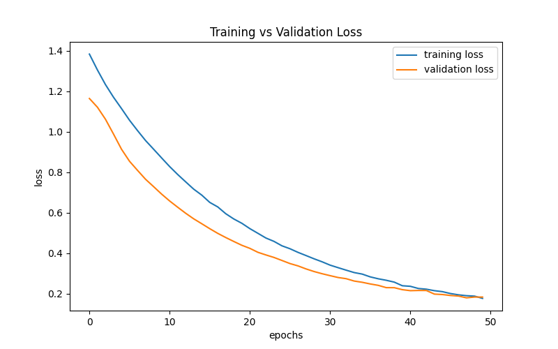
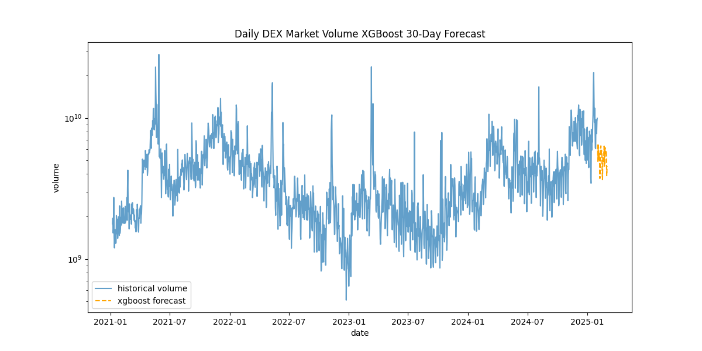
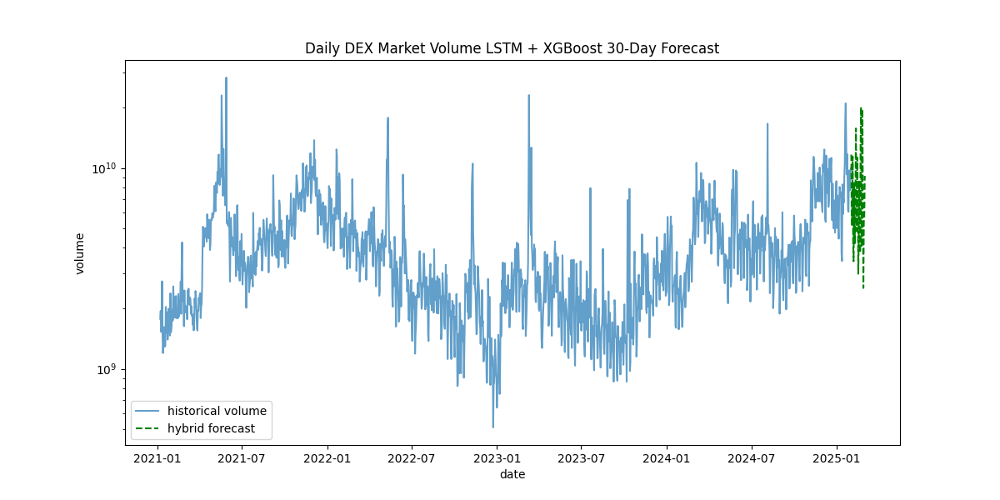
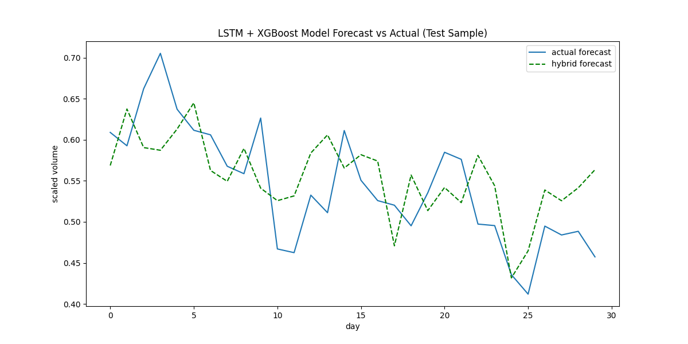

Digital Asset Volume Forecast Technicals (February 2025)
This section provides an in-depth breakdown of the data pipeline and statistical models used in the main report.
Data Collection & Sources
Dune Analytics retrieves and indexes real-time public blockchain data, which can be fetched on-demand with SQL queries.
I set a constraint to begin at January 1, 2021, and end at February 1, 2025, throughout the main report.
Data Collection and Preprocessing
On Dune Analytics, using SQL queries, I gathered 4 years and 1 month's worth of daily NFT and DEX volume, from January 2021 - January 2025 (inclusive), or 1492 rows of data. Then, I created an API endpoint using an API key and my query IDs on Dune to create a .csv of the query result in order to begin creating my volume forecasts.
SELECT
date_trunc('day', block_date) AS day,
SUM(amount_usd) AS total_volume
FROM
nft.trades
WHERE block_time >= TIMESTAMP '2021-01-01' AND block_time < TIMESTAMP '2025-02-01'
GROUP BY
date_trunc('day', block_date)
ORDER BY
day ASC;Then, in Python, I log transformed the data, applied some feature engineering (volatility, lag, moving average) along with holiday flags and day-of-week flags to catch cyclical patterns, and scaled everything together using RobustScaler.
import pandas as pd
import numpy as np
from sklearn.preprocessing import RobustScaler
import joblib
# load the dataset
df = pd.read_csv("nft_volume_data.csv")
# rename columns and convert date to datetime
df.rename(columns={'day': 'date', 'total_volume': 'volume'}, inplace=True)
df['date'] = pd.to_datetime(df['date'])
df = df.sort_values("date")
# apply log transformation to stabilize variance
df['volume'] = np.log1p(df['volume'])
# add a short-term moving average (3-day) to smooth noise
df['volume_ma3'] = df['volume'].rolling(window=3).mean()
# compute daily difference and 7-day volatility
df['volume_diff'] = df['volume'].diff()
df['volatility'] = df['volume'].rolling(window=7).std()
# add lag features to capture short-term dependencies
df['lag1'] = df['volume'].shift(1)
df['lag2'] = df['volume'].shift(2)
df['lag3'] = df['volume'].shift(3)
df['lag7'] = df['volume'].shift(7)
# encode day of week as sine and cosine (to capture cyclical patterns)
df['day_of_week'] = df['date'].dt.dayofweek
df['sin_day'] = np.sin(2 * np.pi * df['day_of_week'] / 7)
df['cos_day'] = np.cos(2 * np.pi * df['day_of_week'] / 7)
# is holiday flag
holiday_list = [
'2021-01-01','2021-12-25','2022-01-01','2022-12-25',
'2023-01-01','2023-12-25','2024-01-01','2024-12-25','2025-01-01'
]
holiday_dates = set(pd.to_datetime(holiday_list).date)
df['is_holiday'] = df['date'].dt.date.apply(lambda d: 1 if d in holiday_dates else 0)
# drop rows with nan values (from rolling and lag computations)
df = df.dropna()
# define parameters for sequence creation
look_back = 120 # use past 120 days as input
n_future = 30 # forecast the next 30 days
# define feature columns
features = [
'volume',
'volume_ma3',
'volume_diff',
'volatility',
'sin_day',
'cos_day',
'is_holiday',
'lag1',
'lag2',
'lag3',
'lag7'
]
# scale all features together using robustscaler to reduce the impact of outliers
scaler = RobustScaler()
data_scaled = scaler.fit_transform(df[features].values)
joblib.dump(scaler, "scaler.pkl")
# function to create sequences for multi-step forecasting
def create_sequences(data, look_back, n_future):
X, y = [], []
for i in range(len(data) - look_back - n_future + 1):
X.append(data[i:i + look_back])
# we predict the 'volume' (index 0) for the next n_future days
y.append(data[i + look_back: i + look_back + n_future, 0])
return np.array(X), np.array(y)
X, y = create_sequences(data_scaled, look_back, n_future)
np.save("X.npy", X)
np.save("y.npy", y)
# save the preprocessed dataset for reference
df.to_csv("nft_volume_preprocessed.csv", index=False)
print("data preprocessing complete.")LSTM
Unlike standard neural networks, LSTMs have memory cells that help them remember long-term dependencies in time series data. For NFTs, I used a bidirectional LSTM model with Adam optimizer and Huber loss.
import numpy as np
import pandas as pd
import joblib
import tensorflow as tf
from tensorflow.keras.models import Sequential
from tensorflow.keras.layers import LSTM, Dense, Dropout, Bidirectional, BatchNormalization
from tensorflow.keras.regularizers import l2
from tensorflow.keras.optimizers import Adam
from tensorflow.keras.losses import Huber
from tensorflow.keras.callbacks import EarlyStopping, ReduceLROnPlateau
import matplotlib.pyplot as plt
# load the preprocessed data and sequences
df = pd.read_csv("nft_volume_preprocessed.csv")
X = np.load("X.npy")
y = np.load("y.npy")
# perform a time-based split
split_idx = int(len(X) * 0.8)
X_train, X_test = X[:split_idx], X[split_idx:]
y_train, y_test = y[:split_idx], y[split_idx:]
look_back = 120
n_future = 30
n_features = X.shape[2]
model = Sequential()
# first bidirectional lstm layer
model.add(Bidirectional(
LSTM(32, return_sequences=True, kernel_regularizer=l2(0.005)),
input_shape=(look_back, n_features)
))
model.add(Dropout(0.6))
model.add(BatchNormalization())
# second bidirectional lstm layer
model.add(Bidirectional(
LSTM(16, return_sequences=False, kernel_regularizer=l2(0.005))
))
model.add(Dropout(0.6))
model.add(BatchNormalization())
# output dense layer for forecasting n_future days
model.add(Dense(n_future, activation='linear'))
# compile the model with adam optimizer and huber loss
model.compile(optimizer=Adam(learning_rate=0.0001), loss=Huber(delta=1.0))
# set up callbacks for early stopping and reducing lr on plateau
early_stop = EarlyStopping(monitor='val_loss', patience=5, restore_best_weights=True)
reduce_lr = ReduceLROnPlateau(monitor='val_loss', factor=0.5, patience=3, min_lr=1e-6)
# train the model with callbacks
history = model.fit(
X_train, y_train,
epochs=50,
batch_size=16,
validation_data=(X_test, y_test),
callbacks=[early_stop, reduce_lr],
verbose=1
)
# save the model
model.save("lstm_nft_model_seq2seq.h5")
# plot training vs validation loss
plt.figure(figsize=(8, 5))
plt.plot(history.history['loss'], label="training loss")
plt.plot(history.history['val_loss'], label="validation loss")
plt.xlabel("epochs")
plt.ylabel("loss")
plt.legend()
plt.title("Training vs Validation Loss")
plt.show()
print("training complete and model saved.")
After training the data, I evaluated the model by comparing training versus validation loss to detect overfitting. Here, I found that both training and validation loss are decreasing and with an acceptable, decreasing gap.

From here, I prepared input data by transforming the dataset using the scaler and extracting the last 120 days as input for the model, and then ran the prediction for the next 30 days in log-form. Then, the predictions were inverted out of log and I created a dataframe to store the predicted volume values.
import numpy as np
import pandas as pd
import joblib
import tensorflow as tf
import matplotlib.pyplot as plt
# load the trained model and scaler
model = tf.keras.models.load_model("lstm_nft_model_seq2seq.h5")
scaler = joblib.load("scaler.pkl")
# load and prepare the preprocessed dataset
df = pd.read_csv("nft_volume_preprocessed.csv")
df['date'] = pd.to_datetime(df['date'])
look_back = 120
n_future = 30
features = [
'volume',
'volume_ma3',
'volume_diff',
'volatility',
'sin_day',
'cos_day',
'is_holiday',
'lag1',
'lag2',
'lag3',
'lag7'
]
# scale features using the saved scaler
data_scaled = scaler.transform(df[features].values)
# prepare the input sequence using the last look_back days
input_seq = data_scaled[-look_back:].reshape(1, look_back, len(features))
# predict the next n_future days (predictions are in the log-transformed domain)
predicted_log = model.predict(input_seq, verbose=0).flatten()
# function to invert scaling and reverse the log transformation
def invert_transform(values, scaler, features, index=0):
dummy = np.zeros((len(values), len(features)))
dummy[:, index] = values
inv = scaler.inverse_transform(dummy)[:, index]
return np.expm1(inv)
# get predictions on the original volume scale
predicted = invert_transform(predicted_log, scaler, features, index=0)
# create a dataframe for predicted future dates and volumes
last_date = df['date'].iloc[-1]
future_dates = pd.date_range(last_date + pd.Timedelta(days=1), periods=n_future)
pred_df = pd.DataFrame({
'date': future_dates,
'predicted_volume': predicted
})
# plot historical and predicted volumes (applying inverse log transform on historical data)
plt.figure(figsize=(12,6))
plt.plot(df['date'], np.expm1(df['volume']), label="historical volume", alpha=0.7)
plt.plot(pred_df['date'], pred_df['predicted_volume'], label="predicted volume", linestyle='dashed', color="orange")
plt.yscale("log")
plt.xlabel("date")
plt.ylabel("volume")
plt.title("Daily NFT Market Volume LSTM 30-Day Forecast")
plt.legend()
plt.show()
To confirm the model's accuracy, I built a test model for evaluation. I loaded the trained model, scaler, and dataset, created a test set from the last 150 days, extracted the last 120 days as input, and also extracted the next 30 days of actual volume to compare against predictions. I then made predictions, inverted scaling, and calculated MAE, RMSE, and MAPE.
import numpy as np
import pandas as pd
import joblib
import tensorflow as tf
from sklearn.metrics import mean_absolute_error, mean_squared_error
# load the trained model and scaler
model = tf.keras.models.load_model("lstm_nft_model_seq2seq.h5")
scaler = joblib.load("scaler.pkl")
# load and prepare the preprocessed dataset
df = pd.read_csv("nft_volume_preprocessed.csv")
df['date'] = pd.to_datetime(df['date'])
features = [
'volume',
'volume_ma3',
'volume_diff',
'volatility',
'sin_day',
'cos_day',
'is_holiday',
'lag1',
'lag2',
'lag3',
'lag7'
]
look_back = 120
n_future = 30
# create a pseudo-test set from the last (look_back + n_future) days of historical data
test_data = df.iloc[-(look_back + n_future):].copy()
data_scaled = scaler.transform(test_data[features].values)
# prepare the input sequence from the test set (first look_back days)
input_seq = data_scaled[:look_back].reshape(1, look_back, len(features))
# actual future values (in log domain) for the next n_future days from the test set
actual_log = data_scaled[look_back:look_back + n_future, 0] # 'volume' is index 0
# model prediction for the test period
predicted_log = model.predict(input_seq, verbose=0).flatten()
# invert transformations to get original scale
def invert_transform(values, scaler, features, index=0):
dummy = np.zeros((len(values), len(features)))
dummy[:, index] = values
inv = scaler.inverse_transform(dummy)[:, index]
return np.expm1(inv)
predicted = invert_transform(predicted_log, scaler, features, index=0)
actual = invert_transform(actual_log, scaler, features, index=0)
# calculate error metrics
mae_val = mean_absolute_error(actual, predicted)
rmse_val = np.sqrt(mean_squared_error(actual, predicted))
mape_val = np.mean(np.abs((actual - predicted) / actual)) * 100
print("evaluation on historical test period:")
print(f"mae: {mae_val:.2f}")
print(f"rmse: {rmse_val:.2f}")
print(f"mape: {mape_val:.2f}%")Performance metrics on NFT data:
- MAE: 5,859,829.60
- MSE: 8,469,173.92
- MAPE: 28.79%
The MAPE, or Mean Absolute Percentage Error, expresses error as a percentage of actual values. 28.79% MAPE is acceptable, considering the inherent noisy data of the NFT market.
XGBoost
With the data already fetched and preprocessed, training using different models is made easier. I loaded the preprocessed DEX dataset, applied the scaler, created sequences using a sliding window, flattened the data for XGBoost, used MultiOutputRegressor to handle multi-step forecasting (since XGBoost doesn't do that inherently), computed model evaluation metrics (MAE, RMSE, and MAPE) on the test set for performance assessment, and forecasted the next 30 days of DEX market volume:
import numpy as np
import pandas as pd
import joblib
import matplotlib.pyplot as plt
from sklearn.model_selection import train_test_split
from sklearn.multioutput import MultiOutputRegressor
from xgboost import XGBRegressor
from sklearn.metrics import mean_absolute_error, mean_squared_error
# load preprocessed data
df = pd.read_csv("dex_volume_preprocessed.csv")
df['date'] = pd.to_datetime(df['date'])
# define feature list
features = [
'volume',
'volume_diff',
'volatility',
'sin_day',
'cos_day',
'is_holiday',
'lag1',
'lag2',
'lag3'
]
# define parameters
look_back = 120 # number of past days used as input
n_future = 30 # number of days to forecast
# load the pre-fitted scaler and scale data
scaler = joblib.load("scaler.pkl")
data_scaled = scaler.transform(df[features].values)
# create sequences using a sliding window
def create_sequences(data, look_back, n_future):
X, y = [], []
for i in range(len(data) - look_back - n_future + 1):
X.append(data[i:i + look_back])
# predict the 'volume' feature (index 0) for the next n_future days
y.append(data[i + look_back: i + look_back + n_future, 0])
return np.array(X), np.array(y)
X_seq, y_seq = create_sequences(data_scaled, look_back, n_future)
# xgboost expects 2d tabular data, so flatten the time dimension
n_samples = X_seq.shape[0]
X_flat = X_seq.reshape(n_samples, -1) # shape becomes (n_samples, look_back * number_of_features)
# split data into training and testing sets (no shuffling, to preserve time order)
X_train, X_test, y_train, y_test = train_test_split(X_flat, y_seq, test_size=0.2, shuffle=False)
# build and train the xgboost model using multioutputregressor for multi-step forecasting
xgb_model = MultiOutputRegressor(
XGBRegressor(
objective='reg:squarederror',
n_estimators=100,
learning_rate=0.1,
max_depth=5,
random_state=42
)
)
xgb_model.fit(X_train, y_train)
# evaluate the model on the test set
y_pred = xgb_model.predict(X_test)
mae_val = mean_absolute_error(y_test, y_pred)
rmse_val = np.sqrt(mean_squared_error(y_test, y_pred))
mape_val = np.mean(np.abs((y_test - y_pred) / y_test)) * 100
print("xgboost model evaluation on test set:")
print(f"mae: {mae_val:.2f}")
print(f"rmse: {rmse_val:.2f}")
print(f"mape: {mape_val:.2f}%")
# forecast the next 30 days using the most recent data
last_input = data_scaled[-look_back:].reshape(1, -1)
xgb_forecast_log = xgb_model.predict(last_input).flatten()
# function to invert scaling and reverse the log transformation
def invert_transform(values, scaler, features, index=0):
dummy = np.zeros((len(values), len(features)))
dummy[:, index] = values
inv = scaler.inverse_transform(dummy)[:, index]
return np.expm1(inv)
# invert transformation for the forecast
xgb_forecast = invert_transform(xgb_forecast_log, scaler, features, index=0)
# visualization
plt.figure(figsize=(12, 6))
plt.plot(df['date'], np.expm1(df['volume']), label="historical volume", alpha=0.7)
last_date = df['date'].iloc[-1]
future_dates = pd.date_range(last_date + pd.Timedelta(days=1), periods=n_future)
plt.plot(future_dates, xgb_forecast, label="xgboost forecast", linestyle='dashed', color="orange")
plt.yscale("log")
plt.xlabel("date")
plt.ylabel("volume")
plt.title("Daily DEX Market Volume XGBoost 30-Day Forecast")
plt.legend()
plt.show()
Performance metrics on DEX data:
- MAE: 0.08
- RMSE: 0.10
- MAPE: 13.49%
Hybrid
I also built a hybrid model in an attempt to take advantage of each of their strengths, with LSTMs being great at capturing temporal dependencies and sequential patterns and XGBoost excelling at handling non-linear relationships and dealing with noise in data to capture complex patterns. I trained a linear regression metamodel to combine their predictions, then forecasted the next 30 days using the hybrid model. For DEX:
import numpy as np
import pandas as pd
import joblib
import tensorflow as tf
from sklearn.multioutput import MultiOutputRegressor
from xgboost import XGBRegressor
from sklearn.linear_model import LinearRegression
from sklearn.metrics import mean_absolute_error, mean_squared_error
import matplotlib.pyplot as plt
# load preprocessed data
df = pd.read_csv("dex_volume_preprocessed.csv")
df['date'] = pd.to_datetime(df['date'])
# define feature list
features = [
'volume',
'volume_diff',
'volatility',
'sin_day',
'cos_day',
'is_holiday',
'lag1',
'lag2',
'lag3'
]
# define parameters
look_back = 120 # number of past days used as input
n_future = 30 # number of days to forecast
# load the pre-fitted scaler and scale the data
scaler = joblib.load("scaler.pkl")
data_scaled = scaler.transform(df[features].values)
# function to create sequences for multistep forecasting
def create_sequences(data, look_back, n_future):
X, y = [], []
for i in range(len(data) - look_back - n_future + 1):
X.append(data[i : i + look_back])
# predict the 'volume' feature (index 0) for the next n_future days
y.append(data[i + look_back : i + look_back + n_future, 0])
return np.array(X), np.array(y)
# create sequences from the scaled data
X_seq, y_seq = create_sequences(data_scaled, look_back, n_future)
# for hybrid metamodel training, select the last 100 sequences
meta_samples = 100 if X_seq.shape[0] >= 100 else X_seq.shape[0]
meta_X = X_seq[-meta_samples:]
meta_y = y_seq[-meta_samples:]
# load the pre-trained lstm model
lstm_model = tf.keras.models.load_model("lstm_dex_model_seq2seq.h5")
# get lstm predictions
lstm_preds = []
for i in range(meta_X.shape[0]):
pred = lstm_model.predict(meta_X[i : i + 1], verbose=0).flatten()
lstm_preds.append(pred)
lstm_preds = np.array(lstm_preds) # shape (meta_samples, n_future)
# prepare xgboost by flattening the time dimension
meta_X_flat = meta_X.reshape(meta_X.shape[0], -1)
# build and train the xgboost model
n_samples = X_seq.shape[0]
X_flat = X_seq.reshape(n_samples, -1)
xgb_model = MultiOutputRegressor(
XGBRegressor(
objective='reg:squarederror',
n_estimators=100,
learning_rate=0.1,
max_depth=5,
random_state=42
)
)
xgb_model.fit(X_flat, y_seq)
# get xgboost predictions
xgb_preds = xgb_model.predict(meta_X_flat)
# combine predictions from lstm and xgboost
meta_features = np.hstack([lstm_preds, xgb_preds])
meta_targets = meta_y
# train a linear regression metamodel (using multioutputregressor) to combine base model predictions
meta_model = MultiOutputRegressor(LinearRegression())
meta_model.fit(meta_features, meta_targets)
# forecast
last_seq = data_scaled[-look_back:].reshape(1, look_back, len(features))
lstm_forecast = lstm_model.predict(last_seq, verbose=0).flatten() # shape (n_future,)
last_seq_flat = data_scaled[-look_back:].reshape(1, -1)
xgb_forecast = xgb_model.predict(last_seq_flat).flatten() # shape (n_future,)
hybrid_features = np.hstack([lstm_forecast, xgb_forecast]).reshape(1, -1)
hybrid_forecast_log = meta_model.predict(hybrid_features).flatten()
# invert scaling and reverse the log transformation
def invert_transform(values, scaler, features, index=0):
dummy = np.zeros((len(values), len(features)))
dummy[:, index] = values
inv = scaler.inverse_transform(dummy)[:, index]
return np.expm1(inv)
# invert transformation for the hybrid forecast
hybrid_forecast = invert_transform(hybrid_forecast_log, scaler, features, index=0)
# visualization
plt.figure(figsize=(12, 6))
plt.plot(df['date'], np.expm1(df['volume']), label="historical volume", alpha=0.7)
last_date = df['date'].iloc[-1]
future_dates = pd.date_range(last_date + pd.Timedelta(days=1), periods=n_future)
plt.plot(future_dates, hybrid_forecast, label="hybrid forecast", linestyle='dashed', color="green")
plt.yscale("log")
plt.xlabel("date")
plt.ylabel("volume")
plt.title("Daily DEX Market Volume LSTM + XGBoost 30-Day Forecast")
plt.legend()
plt.show()
To assess the model's accuracy, I built a script to train the model on a test set and calculated performance metrics (MAE, RMSE, MAPE) and plotted the forecast vs actual to get a sense of how the model performs versus reality.
import numpy as np
import pandas as pd
import joblib
import tensorflow as tf
from sklearn.model_selection import train_test_split
from xgboost import XGBRegressor
from sklearn.multioutput import MultiOutputRegressor
from sklearn.linear_model import LinearRegression
from sklearn.metrics import mean_absolute_error, mean_squared_error
import matplotlib.pyplot as plt
# load preprocessed data
df = pd.read_csv("dex_volume_preprocessed.csv")
df['date'] = pd.to_datetime(df['date'])
# define feature list
features = [
'volume',
'volume_diff',
'volatility',
'sin_day',
'cos_day',
'is_holiday',
'lag1',
'lag2',
'lag3'
]
# define parameters
look_back = 120 # number of past days used as input
n_future = 30 # number of days to forecast
# load the scaler and scale the data
scaler = joblib.load("scaler.pkl")
data_scaled = scaler.transform(df[features].values)
# function to create sequences for multistep forecasting
def create_sequences(data, look_back, n_future):
X, y = [], []
for i in range(len(data) - look_back - n_future + 1):
X.append(data[i:i + look_back])
# predict the 'volume' feature (index 0) for the next n_future days
y.append(data[i + look_back: i + look_back + n_future, 0])
return np.array(X), np.array(y)
# create sequences from the scaled data
X_seq, y_seq = create_sequences(data_scaled, look_back, n_future)
# split data into training and test sets (preserving time order)
X_train, X_test, y_train, y_test = train_test_split(X_seq, y_seq, test_size=0.2, shuffle=False)
# flatten the time dimension
n_samples_train = X_train.shape[0]
X_train_flat = X_train.reshape(n_samples_train, -1)
# train xgboost model on training set
xgb_model = MultiOutputRegressor(
XGBRegressor(
objective='reg:squarederror',
n_estimators=100,
learning_rate=0.1,
max_depth=5,
random_state=42
)
)
xgb_model.fit(X_train_flat, y_train)
# load the pre-trained lstm model
lstm_model = tf.keras.models.load_model("lstm_dex_model_seq2seq.h5")
# create meta training data from the last part of the training set
meta_train_size = min(100, X_train.shape[0])
meta_X_train = X_train[-meta_train_size:]
meta_y_train = y_train[-meta_train_size:]
# get base model predictions (lstm and xgboost) on meta training samples
lstm_meta_preds = []
xgb_meta_preds = []
for i in range(meta_train_size):
sample = meta_X_train[i:i+1]
# get lstm prediction
pred_lstm = lstm_model.predict(sample, verbose=0).flatten()
lstm_meta_preds.append(pred_lstm)
# flatten sample for xgboost input
sample_flat = sample.reshape(1, -1)
pred_xgb = xgb_model.predict(sample_flat).flatten()
xgb_meta_preds.append(pred_xgb)
lstm_meta_preds = np.array(lstm_meta_preds)
xgb_meta_preds = np.array(xgb_meta_preds)
# combine base model predictions to form meta features
meta_features_train = np.hstack([lstm_meta_preds, xgb_meta_preds])
# train a linear regression metamodel (wrapped in multioutputregressor) to combine predictions
meta_model = MultiOutputRegressor(LinearRegression())
meta_model.fit(meta_features_train, meta_y_train)
# evaluate the hybrid model on the test set
n_samples_test = X_test.shape[0]
lstm_test_preds = []
xgb_test_preds = []
for i in range(n_samples_test):
sample = X_test[i:i+1]
pred_lstm = lstm_model.predict(sample, verbose=0).flatten()
lstm_test_preds.append(pred_lstm)
sample_flat = sample.reshape(1, -1)
pred_xgb = xgb_model.predict(sample_flat).flatten()
xgb_test_preds.append(pred_xgb)
lstm_test_preds = np.array(lstm_test_preds)
xgb_test_preds = np.array(xgb_test_preds)
meta_features_test = np.hstack([lstm_test_preds, xgb_test_preds])
# use metamodel to generate hybrid predictions on test set
hybrid_test_preds = meta_model.predict(meta_features_test)
# calculate evaluation metrics on test set for hybrid model
mae_val = mean_absolute_error(y_test, hybrid_test_preds)
rmse_val = np.sqrt(mean_squared_error(y_test, hybrid_test_preds))
mape_val = np.mean(np.abs((y_test - hybrid_test_preds) / y_test)) * 100
print("hybrid model evaluation on test set:")
print(f"mae: {mae_val:.2f}")
print(f"rmse: {rmse_val:.2f}")
print(f"mape: {mape_val:.2f}%")
# visualization
plt.figure(figsize=(12,6))
plt.plot(y_test[0], label="actual forecast")
plt.plot(hybrid_test_preds[0], label="hybrid forecast", linestyle='dashed', color="green")
plt.xlabel("day")
plt.ylabel("scaled volume")
plt.title("LSTM + XGBoost Model Forecast vs Actual (Test Sample)")
plt.legend()
plt.show()Performance metrics on DEX data:
- MAE: 0.10
- RMSE: 0.12
- MAPE: 18.28%

Model Limitations
This study assumes a stationary relationship between DEX and NFT markets, but in reality market structures change and evolve over time. For example, NFTs experienced a mania in 2021 that made data prior to that practically irrelevant.